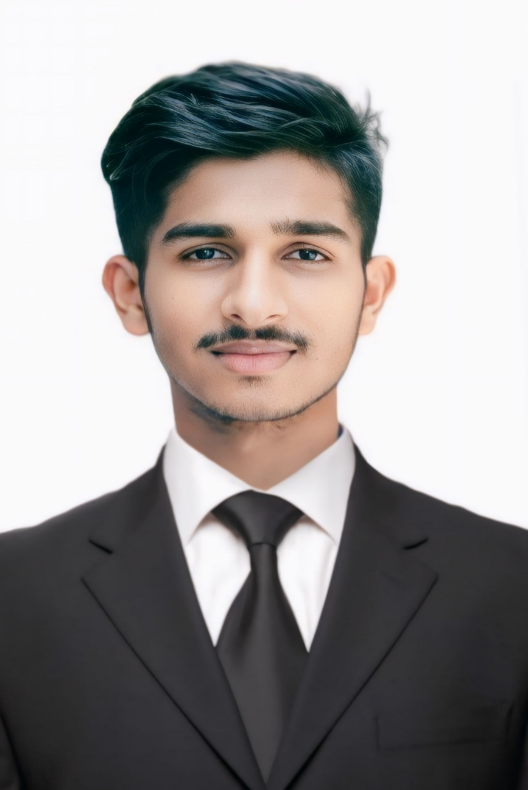
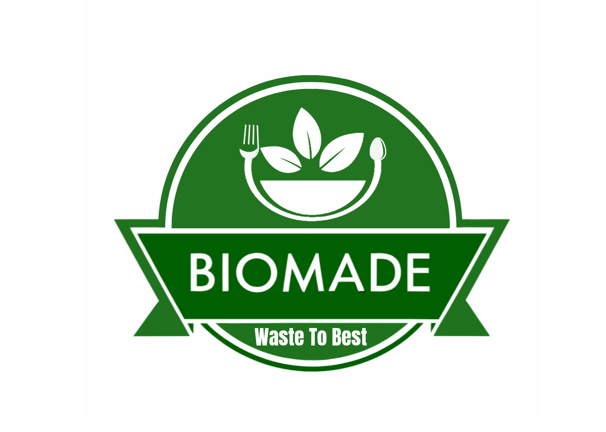
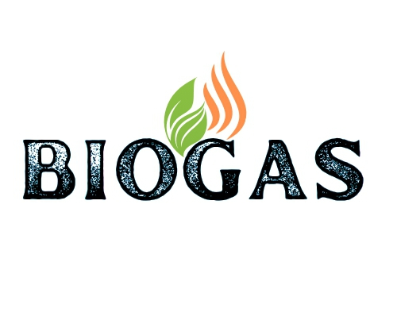
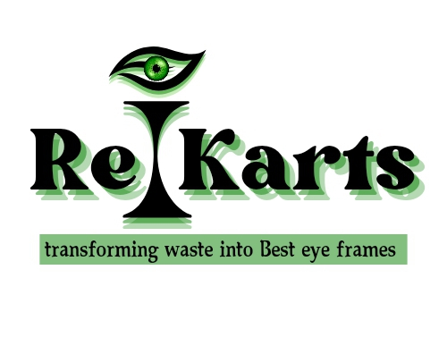
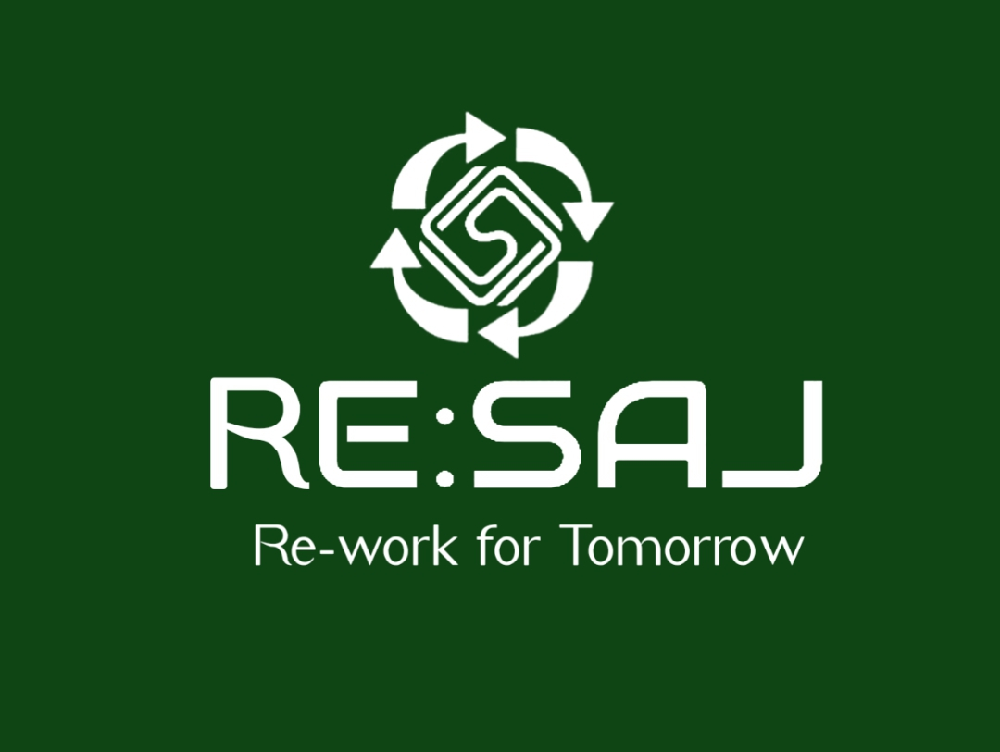

Year: 2020 | Bangladesh National Curriculum
Successfully completed the national-level SSC examination under the science group — one of Bangladesh's most competitive academic streams. This foundation in science and analytical thinking became a cornerstone of my research-driven approach to environmental problem-solving and sustainable business development.
Year: 2020–2022 | Inter 2nd Year
Enrolled in the HSC science stream following SSC. During this period, I encountered significant personal and family challenges that led me to make a deliberate decision to step away from formal education and redirect my focus toward entrepreneurship and real-world impact. This transition, while unconventional, allowed me to channel my energy into founding and developing multiple sustainability-focused ventures — work that has been far more formative than any classroom experience.
2022 – Present | Ongoing
Since stepping away from formal education, I have pursued an intensive and self-directed curriculum in the fields of circular economy, waste management, sustainable manufacturing, biogas technology, and impact entrepreneurship. My research-led learning directly informs the RE:SAJ Bangladesh initiative — a full-scale circular economy model developed through independent study, market research, and hands-on project development across multiple industries.
Deep expertise in circular economy design, waste-to-value business models, and sustainable manufacturing. Hands-on research into processing six waste streams — soft plastic, hard plastic, food waste, textiles, wood & paper, and glass & metal — as deployed in the RE:SAJ Bangladesh initiative. Comprehensive knowledge of biodegradable materials including bagasse, rice husks, wheat bran, bamboo pulp, and seaweed for eco-product development.
Skilled in end-to-end startup development — from ideation and market research to financial modelling, investor pitch preparation, and go-to-market strategy. Experienced in building B2C and B2B business models, multi-stream revenue structures, and partnership frameworks. Author of the full RE:SAJ Bangladesh investment plan, targeting a ৳15.5M–৳21M first-year pilot across Dhaka.
Proficient in designing digital ecosystem concepts including mobile apps, admin dashboards, QR-based tracking systems, and digital reward platforms. Conceptualized and specified the full RE:SAJ three-platform ecosystem: User App, Collector App, and Admin Panel — covering AI-based pickup dispatch, Green Credit engine, real-time city waste heatmaps, and Green Wallet mobile banking integration.
Experienced in visual communication and brand identity creation using Canva and mobile-based editing tools. Capable of producing professional-grade pitch decks, investor presentations, social media content, posters, banners, and brand collateral. Strong written communication skills in both English and Bengali, applied across business proposals, outreach campaigns, and platform documentation.
Proficient in MS Word, MS Excel, and Google Workspace tools for data management, reporting, and documentation. Familiar with supplier sourcing workflows, procurement planning, and manufacturing process mapping for sustainable product lines. Experienced in using social media platforms strategically to build brand presence, drive community engagement, and attract investor interest.
Experienced in designing community-driven programs that create behavioural change through incentives rather than mandates. Developed the RE:SAJ Green Credit system — a digital rewards economy that pays households in Bangladesh to segregate and submit waste. Passionate about rural employment generation, women's economic empowerment through artisan integration, and inclusive growth in the circular economy.
2024 – Present | Dhaka, Bangladesh
Founded and developed RE:SAJ Bangladesh — a full-scale circular economy initiative tackling Dhaka's 6,500-ton daily urban waste crisis. Independently conducted extensive market research and systems design, culminating in a comprehensive platform that integrates a smart waste tracking app, on-demand collection network, in-house recycling plant, biogas energy system, and a Green Credit digital reward economy.
Key outcomes: Complete investment plan (৳15.5M–৳21M pilot), six-stream 360° waste processing model, three-platform digital ecosystem design, and a replicable circular economy framework targeting 2,000+ households, 500+ tons of waste processed, and ৳30M+ revenue in Year 1.
2023 – Present | Dhaka, Bangladesh
Founded BioMade to develop and commercialise biodegradable consumer products — plates, cups, straws, and spoons — manufactured from agricultural and plant waste including bagasse, rice husks, wheat bran, bamboo pulp, and seaweed. Developed full business plan, supplier sourcing strategy, and investor pitch deck targeting the plastic replacement market in Bangladesh and the broader South Asian region.
2023 – Present | Bangladesh
Developed a household and community-scale biogas digester project converting organic food waste into purified biogas for clean cooking energy. This initiative directly informed the RE:SAJ Bangladesh energy model, where food waste biogas powers the entire in-house recycling facility — achieving zero-grid operations. Produced a full business pitch deck and operational design for rural and urban household deployment.
2023 – Present | Dhaka, Bangladesh
Founded Re i Karts, an innovative startup addressing Bangladesh's plastic waste crisis by recycling hard plastics into sustainable consumer products — including eyewear frames and lifestyle accessories. Developed proprietary recycling technology concept, brand identity, and full investor pitch deck positioning Re i Karts as a premium eco-fashion brand in the Bangladeshi market.
2023 – 2024 | Dhaka, Bangladesh
Co-founded and led marketing operations for a travel agency, managing tour operator relationships, brand communications, and digital marketing campaigns. Developed skills in budget management, team leadership, sales target planning, and multi-channel customer acquisition — all of which now directly inform the partner management and commission-based revenue model within the RE:SAJ ecosystem.
2021 – 2024 | Dhaka, Bangladesh
Served as a field sales representative for a pharmaceutical company, building and managing relationships with healthcare professionals, clinics, and hospitals across assigned territories. Consistently met and exceeded annual sales targets, expanded account portfolios, and delivered product education presentations to medical practitioners. This experience built a strong foundation in professional communication, relationship management, and data-driven performance tracking.
Independently researched, designed, and developed RE:SAJ Bangladesh — one of the most comprehensive circular economy models ever conceived for Bangladesh. The platform processes all six major waste streams (soft plastic, hard plastic, food waste, textiles, wood & paper, and glass & metal) with zero landfill output, powered by an in-house biogas plant, and connected through a three-platform AI-driven digital ecosystem. RE:SAJ has been recognised as a viable, investable, and globally replicable solution to Bangladesh's urban waste crisis.
Identified and developed a solution for Multi-Layer Packaging (MLP) waste — chips packets and multilayer food wrappers — which no other company in Bangladesh is currently able to recycle. RE:SAJ's unique handloom-based upcycling method transforms this toxic, unrecyclable material into fashionable eco bags, pouches, and home décor products through traditional Bangladeshi artisan weaving techniques. This breakthrough positions RE:SAJ as the only player in the country capable of closing this critical waste gap.
Conceptualised and integrated a food waste biogas digester system into the RE:SAJ recycling plant design, making the facility entirely energy self-sufficient — the first waste management model in Bangladesh to achieve this. By converting collected food waste into biogas that powers all recycling machinery, RE:SAJ achieves zero-grid operations, carbon-neutral manufacturing, and a closed-loop energy system that no competitor can replicate.
Designed and architected the RE:SAJ Green Credit system — a fully digital behavioural change engine that pays households real monetary value for segregating and submitting waste. Credits are earned per kilogram of correctly segregated waste, redeemable at partner merchants (transport, restaurants, hotels, travel), transferable between users for viral growth, and withdrawable as BDT cash via mobile banking. RE:SAJ is the only waste company in Bangladesh to offer this kind of household incentive economy.
Embedded direct employment for rural women artisans within the RE:SAJ production model — creating dignified, skilled livelihoods in the circular economy. By training and deploying traditional handloom weavers to process soft plastic and MLP waste into sellable fashion products, RE:SAJ bridges rural craft heritage with modern sustainable manufacturing. This social impact layer is a core competitive advantage — and a deeply human dimension of the business model.
Across BioMade (biodegradable consumer products), Biogas Digester Systems (clean energy from food waste), Re i Karts (hard plastic upcycling into eco-fashion), and RE:SAJ Bangladesh (full circular economy ecosystem), I have built a portfolio of four complementary sustainability ventures — each addressing a distinct gap in Bangladesh's green economy. Together, they represent a growing ecosystem of circular economy innovation with the potential to scale across South Asia, Africa, and beyond.
Produced a complete, investor-grade body of work for each venture — including market research reports, competitive landscape analyses, financial projections, pitch decks, and a fully designed platform website for RE:SAJ Bangladesh. This documentation has been used to engage international impact investors, sustainable entrepreneurs, and global circular economy networks, positioning RE:SAJ as an investable, replicable, and commercially viable solution on the world stage.

At BioMade, we are committed to creating a sustainable future by producing biodegradable products from natural plants and plant waste. Our eco-friendly alternatives include plates, cups, straws, and spoons made from raw materials like bagasse, rice husks, wheat bran, bamboo pulp, and seaweed.
Download Pitch Deck
Our biogas systems bring a reliable, eco-friendly energy solution to households. By converting organic waste into purified biogas, we offer an efficient and sustainable alternative to traditional fuels.
Download Pitch Deck
(Re i karts) is an innovative startup addressing the Bangladesh plastic waste crisis by recycling plastic's into sustainable products like sunglasses frames. Leveraging proprietary recycling technology, Reikarts offers eco-friendly, durable, and stylish alternatives to conventional products.
Download Pitch Deck
RE:SAJ is a sustainable brand dedicated to transforming textile and plastic waste into functional and stylish products. From upcycled fashion pieces to loom-woven bags and eco-friendly home décor, RE:SAJ showcases how discarded materials can be given a second life with creativity and craftsmanship. Our mission is to reduce waste, inspire conscious consumption, and empower local artisans by building a circular economy that benefits both people and the planet.
Explore project-RESAJ"Join with me in my journey to make a greener future!"